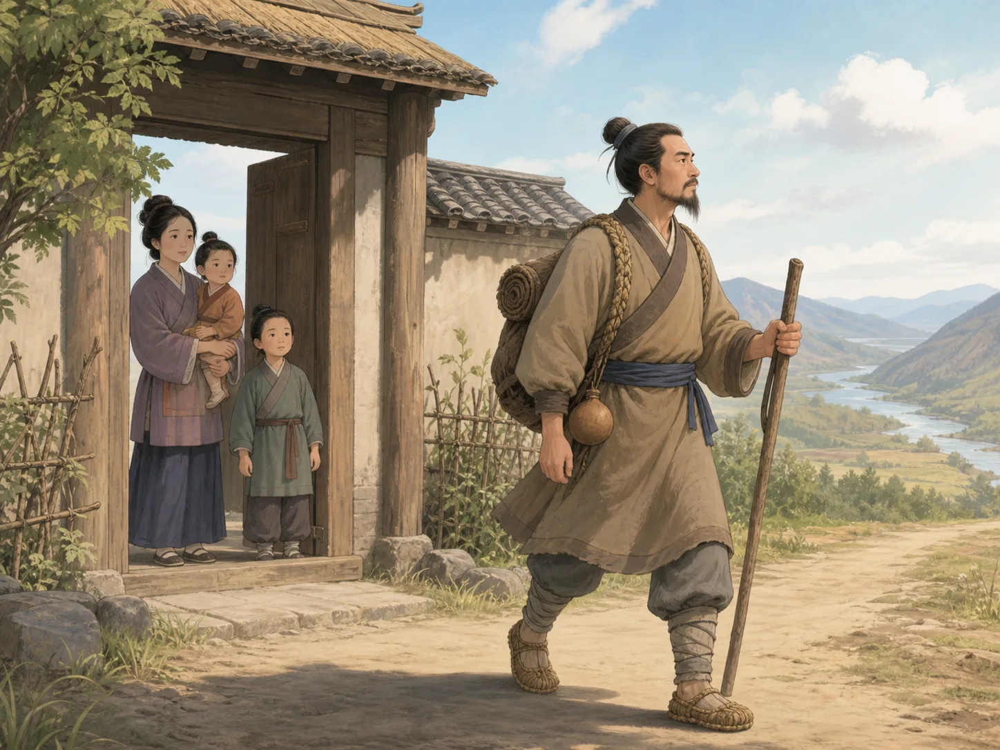

大禹治水：给洪水找一条路
Yu the Great: Making a Path for the Water
Page 1
当洪水铺满大地
When Water Covered the Land
Floodwater spreads across the fields as people reinforce breaks in a long earthen embankment.
中国最古老的一些故事里，有一个故事从“水太多了”开始。古书记载，洪水漫过大地，包围山丘，许多地方无法正常生活。田地不能好好耕种，人们也不能只是坐着等水自己退下去。
最早接下治水任务的，是Dà Yǔ · 中国古代传说中治理洪水的英雄。的父亲Gǔn · 大禹的父亲，传统故事中先接受治水任务却没有成功。。Shǐjì · 司马迁撰写的纪传体史书，保存了鲧、禹和夏的传统叙述。说，鲧治水九年，水患还是没有解决。后来，禹接过了父亲没有完成的工作。
到了禹这里，古书里的画面变了。Shàngshū · 保存上古政治、传说和治水叙述的重要经典。写他疏通大河，让水流向大海，又挖通小的沟渠，让小水流进大河。他走过许多地方，处理河流、湖泽和田地，还要让百姓重新有粮食吃。所以，大禹治水并不是在黄河边挖一条沟那么简单。水的问题铺在一大片土地上。禹要做的，是让这些水找到可以去的地方。
One of China’s oldest stories begins with too much water. The ancient texts describe a flood spreading across the land, rising around hills and mountains and making ordinary life difficult. Fields could not be planted properly. People could not simply wait for the water to disappear.
The first person given the enormous job of controlling it was Gǔn · 鲧 · Yǔ's father, who is given the flood-control task first but does not succeed in the traditional account., Dà Yǔ · 大禹 · The legendary hero who controls a great flood.’s father. The Shǐjì · 《史记》 · Sima Qian's history, which preserves traditional accounts of Gǔn, Yǔ, and Xià. says that Gǔn worked for nine years, but the flood problem was still not solved. Later, Yǔ was asked to continue the work.
Yǔ’s part of the story looks different. The old texts describe him opening large waterways toward the seas and clearing smaller channels so water could reach the rivers. He traveled across the land, dealing with rivers, marshes, fields, and places where people needed food. This was much bigger than digging one ditch beside one river. The problem was water spread across an entire landscape. Yǔ’s task was to help it find places to go.
Page 2
给水找一条路
Give the Water a Way Through
Yu watches from higher ground while workers clear channels through the valley.
下大雨的时候，可以看看地上的水。水总会往低处流。前面的路被堵住，它就积在那里；有了水沟，它又会顺着沟往前走。
后来的人记住大禹，也常常记住这个画面。不要只想象他站在一个地方，对着洪水拼命挖土。古书里的禹一直在不同地方奔走，顺着山川和河道，把大水引向河流和大海，把小水沟和大河连接起来。
《尚书》还把恢复农田、运送粮食这些事情也放在他的治水故事里。这么大的事情，当然不可能靠一个人拿着工具独自完成。大禹的故事慢慢变成了一个组织巨大工程的故事：水要有地方流，田地要重新能种，住在这里的人也要重新生活下去。
可是，这项工作好像一直跟着禹。甚至跟到了他的家门口。
Think about what happens when heavy rain falls on the ground. Water naturally searches for lower places. If its path is blocked, it gathers. If there is a channel, it can move.
That is the picture that later generations remembered about Yǔ. Instead of imagining him standing in one place fighting a wall of water, picture him moving from place to place, following rivers and valleys and working out how water could reach larger rivers and eventually the sea.
The Shàngshū · 《尚书》 · An ancient classic preserving political traditions and accounts of Yǔ's work with water. describes him opening great rivers and digging smaller channels into them. It also connects his work with restoring farming and getting food to people. No one person could reshape a whole landscape with his own two hands. The Yǔ story became a story about organizing enormous work: water had to move, fields had to become usable again, and people had to be able to live on the land.
And the work seemed to follow Yǔ everywhere—even past his own front door.
Page 3
三次经过自己的家门
The Door He Passed Three Times

Yu passes his doorway carrying his pack while his family watches him continue down the road.
Mèngzǐ · 记录孟子言论与思想的儒家经典，其中保存了大禹三过家门的故事。里留下了大禹故事中最有名的一幕。书里说，禹在外治水八年，三次经过自己的家门，都没有进去。
和滔天洪水比起来，这其实是一个很小的画面。这里没有大河，没有高山，也没有浩大的工程。只有一扇家门。
禹已经走到了这么近的地方，只要拐进去，就可以回家。可是他还是继续往前走了。也正因为这个画面这么简单，人们一直记得它。“三过家门而不入”后来成了大禹身上最有名的故事之一。
治水需要的不只是知道水应该往哪里流。还需要有人愿意把一件很难、很久的事情一直做下去。而在传统故事里，这件事最后还把禹带到了另一个完全不同的位置。
The Mèngzǐ · 《孟子》 · A Confucian classic that preserves the story of Yǔ passing his doorway three times. preserves one of the most famous parts of the story. It says that Yǔ spent eight years away at work and passed his own door three times without going inside.
It is such a small scene compared with the enormous flood. There are no roaring rivers in it. No mountains. No great engineering work. There is only a doorway.
Yǔ is close enough to go home, but he keeps moving. That simple image became one of the main reasons people remembered him. The flood-control story was not only about knowing where water should flow. It was also about staying with a difficult job when many other people depended on it.
For generations, the phrase “passing his door three times without entering” became a way of talking about Yǔ’s devotion to public work. And in the story, that work eventually changed much more than the rivers.
Page 4
从治水的人到君王
From Flood Worker to Ruler
传统历史记载，禹治水成功以后，当时的统治者Shùn · 中国上古传说中的统治者，传统记载中把治理天下的位置交给禹。越来越信任他，后来把治理天下的位置交给了禹。
禹也因此成为传统历史中和Xià cháo · 传统中国历史中通常被称为第一个王朝，与大禹和启的故事相连。开始联系在一起的君王。夏通常被称为中国传统历史里的第一个王朝。禹去世以后，他的儿子Qǐ · 传统历史中大禹的儿子和夏朝的继任君王。后来继承了王位，中国古代王朝的故事也进入了新的阶段。
这是一位君王很特别的开场。人们最先记住的禹，不是坐在王座上的样子，而是在外面和洪水打交道的样子。他最有名的功劳也不是打败另一支军队，而是让水退到该去的地方，让田地重新能够耕种，让人们可以继续生活。
所以，后来的人讲起这位早期君王时，总要先讲治水。王宫以前，是河流和泥水；成为君王以前，是一段走了很多年的路。而大禹最让人记住的，始终是那件最开始的事情：给水找一条可以走的路。
Traditional histories say that after Yǔ succeeded in bringing the waters under control, Shùn · 舜 · A legendary early ruler who hands leadership to Yǔ in traditional histories., the ruler, trusted him with more and more responsibility. Eventually, Shùn handed leadership to Yǔ.
Yǔ then became the ruler associated with the beginning of the Xià cháo · 夏朝 · The dynasty traditionally remembered as China's first and linked with Yǔ and Qǐ., remembered in traditional Chinese history as the first dynasty. After Yǔ’s death, his son Qǐ · 启 · Yǔ's son and successor as ruler of Xià in traditional history. eventually took the throne, and the story of ruling families and dynasties began to take a new shape.
That is an unusual beginning for the story of a king. Yǔ is not first remembered sitting on a throne. He is remembered outside, dealing with muddy water. His most famous victory is not defeating another army. It is making land usable again so people can farm and live.
That may be why the story of Yǔ lasted for so long. When later generations told the story of an early Chinese ruler, they began with the work he did before he became one. Before the palace came the rivers. Before the crown came the long journey across the land. And before Yǔ became a king, he was the man who kept trying to give the water somewhere to go.